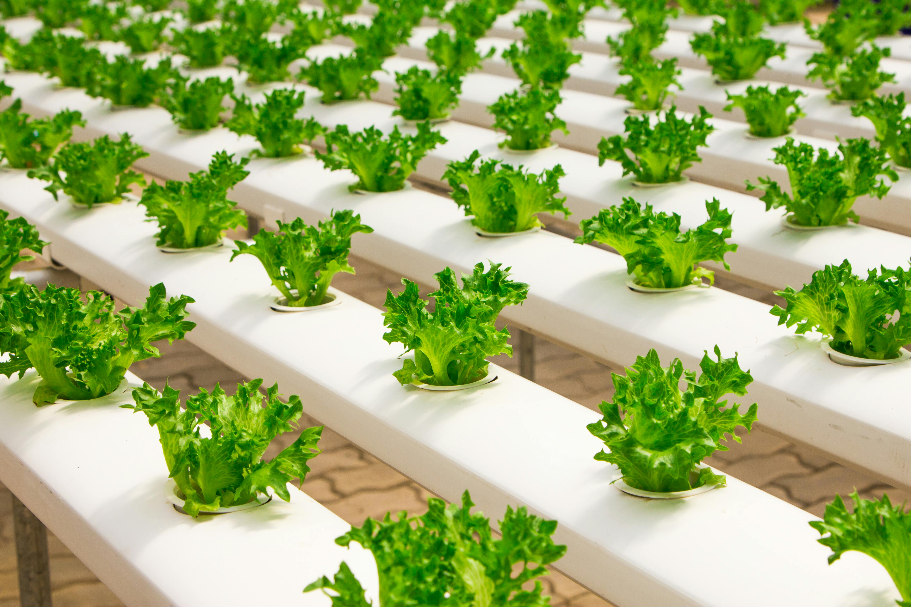
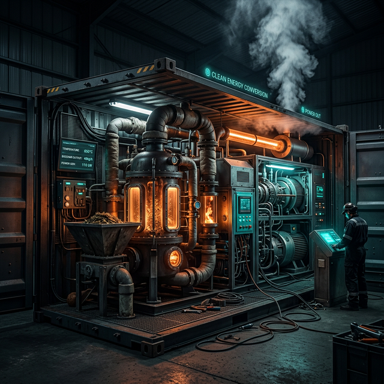
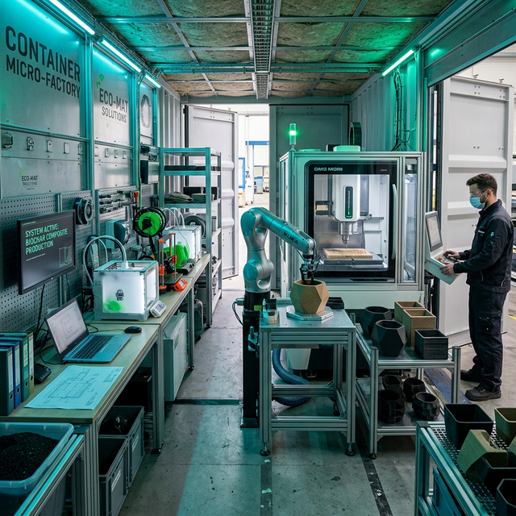
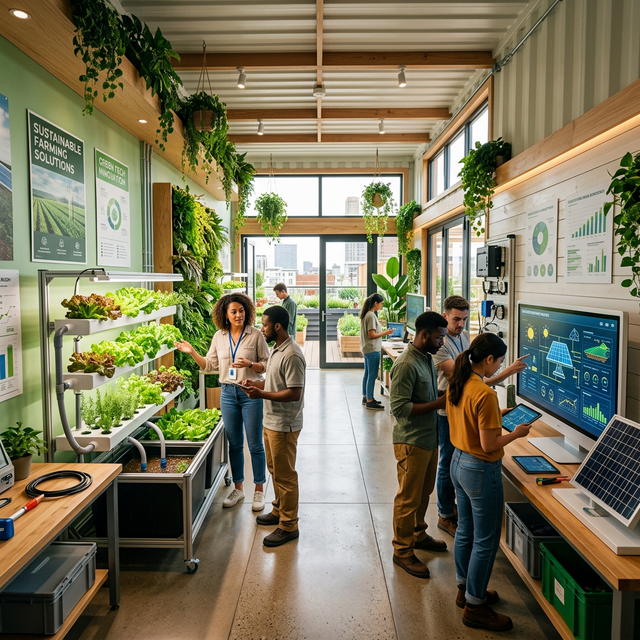

Grow fresh food. Convert waste into energy. Manufacture sustainably.
One modular system. One closed loop. Infinite impact.
BioLoop MicroHub is the world's first modular circular infrastructure platform—built from standard shipping containers, designed to grow food, convert waste, manufacture goods, and train the next generation of green workers in one self-sustaining ecosystem.
Food production feeds waste streams. Waste streams generate energy and biochar. Biochar powers manufacturing. Every output becomes a new input—nothing wasted, everything valued.
Net-negative carbon from day one. Hydroponics slashes water use by 90%. Biochar sequesters CO₂ for centuries. Renewable syngas powers all operations. Designed to give back more than it takes.
Two 20-ft containers. Infinitely replicable. Deploy behind a grocery store, on a school campus, at a transfer station, or across an entire industrial park. Scale with demand, not capital.
Each BioLoop MicroHub integrates four purpose-built modules that work together seamlessly. Click any module to explore the technology.

Year-round hydroponic production of microgreens, herbs, and leafy vegetables using LED lighting and recirculated nutrients.

A compact biomass gasification reactor converts agricultural residues and food waste into clean syngas and stable biochar.

A small-scale fabrication area turns biochar into high-value sustainable products—planters, building blocks, packaging, and more.

Partnering with schools and vocational programs to provide hands-on training in sustainable farming, bioenergy, and fabrication.
Every output becomes an input. Nothing leaves the loop wasted.
Scroll to follow the path of a single cycle—from growth, to waste, to renewable energy.
It starts in the vertical farm. Seeds are planted in hydroponic beds, using precision LED lighting to maximize growth while cutting water usage by 90%.
Fresh greens are harvested at peak nutrition. Because the MicroHub is built locally, food miles are zero, ensuring maximum freshness.
Post-consumer food waste is gathered. Instead of ending up in methane-producing landfills, it is loaded into the BioLoop module.
Inside the high-heat reactor, organics break down into clean combustible syngas to power the farm, and solid carbon biochar.
The resulting biochar is sequestered or fed into the Micro-Factory to manufacture high-value carbon-negative products locally.
Real, verifiable numbers—not aspirations. Every MicroHub delivers measurable environmental, social, and economic returns.
BioLoop MicroHub is a flexible platform. Whether you serve thousands or millions, the system scales and adapts to your context.
Reduce waste-management costs, produce local food, and create green jobs. A MicroHub at a transfer station becomes a visible symbol of circular infrastructure and environmental leadership.
Integrate BioLoop into STEM curricula, turn cafeteria waste into energy, and supply student kitchens with ultra-fresh local greens. Students learn sustainability hands-on.
Slash spoilage, cut hauling fees, and differentiate with house-grown produce. Food hubs can aggregate residues from multiple stores and deliver compost, biochar, or energy back.
Manage biomass waste on site, power facilities with renewable heat, and create sustainable products. Demonstrate ESG leadership with measurable, verifiable metrics.
Convert distribution waste into on-site energy and locally manufactured products. Reduce cold-chain dependence and shorten food miles at scale.
Build zero-waste communities from the ground up. Integrated MicroHubs provide fresh food, renewable energy, and sustainable products to residents as part of the development.
The global circular economy market is projected to reach $4.5 trillion by 2030. BioLoop MicroHub is positioned at the intersection of food security, clean energy, and sustainable manufacturing—three of the most capital-intensive challenges of our era.
Whether you're a municipality, investor, school, or sustainability partner—let's talk about bringing BioLoop MicroHub to your community.